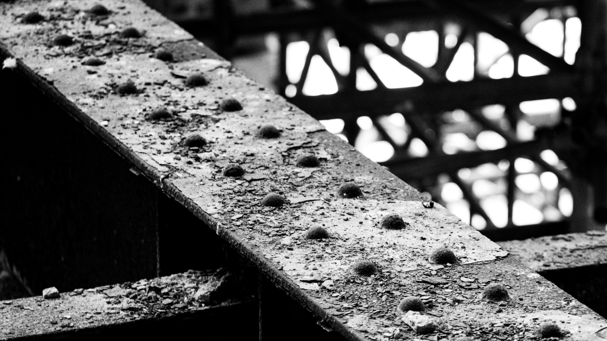
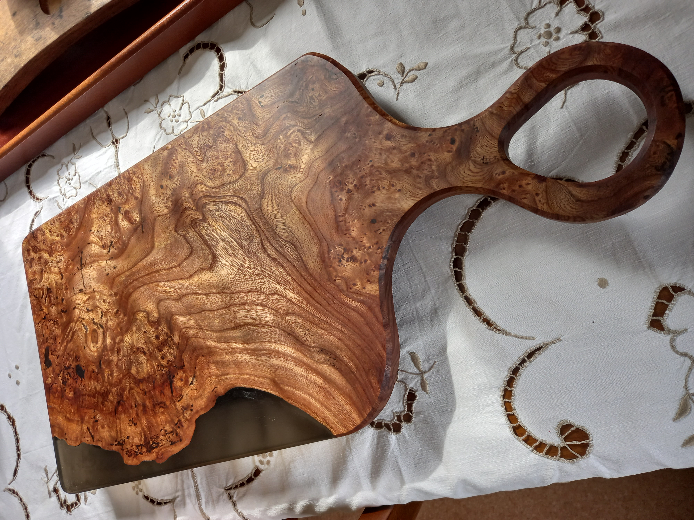

Photography
Landscapes, historic buildings, textures and moments observed while travelling around Scotland.
View photographs →Photography, traditional craftsmanship and the stories found within historic buildings.
Explore my workI’m Alasdair, a construction project manager, craftsman and photographer based in Renfrewshire. This is a collection of landscapes, woodworking projects and historic buildings that have caught my interest along the way.

Landscapes, historic buildings, textures and moments observed while travelling around Scotland.
View photographs →
Furniture, woodworking and the occasional project that begins with “I could probably make that.”
View projects →
Selected conservation projects and the fascinating details uncovered within traditional buildings.
View heritage work →